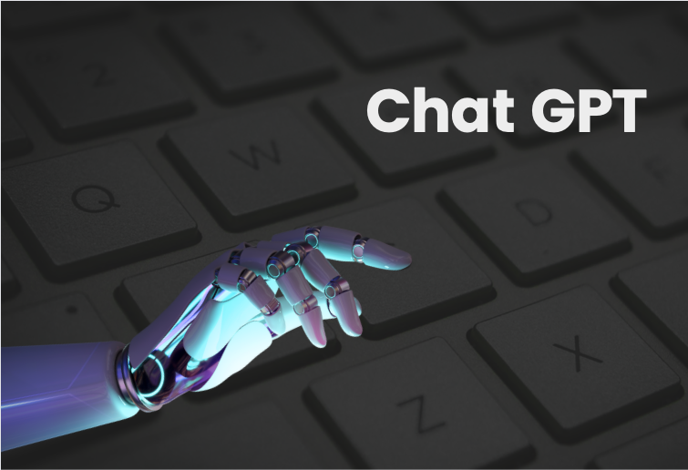
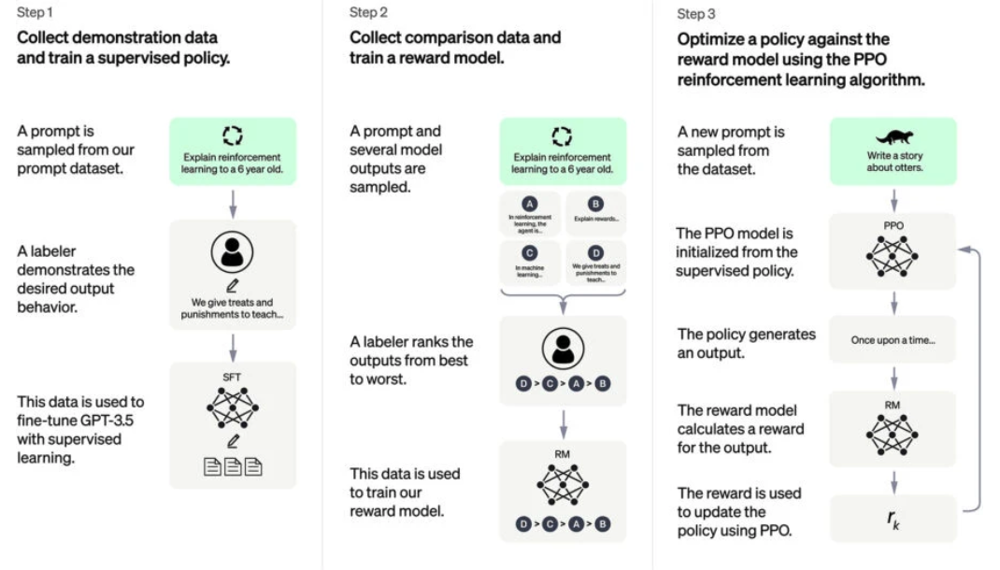
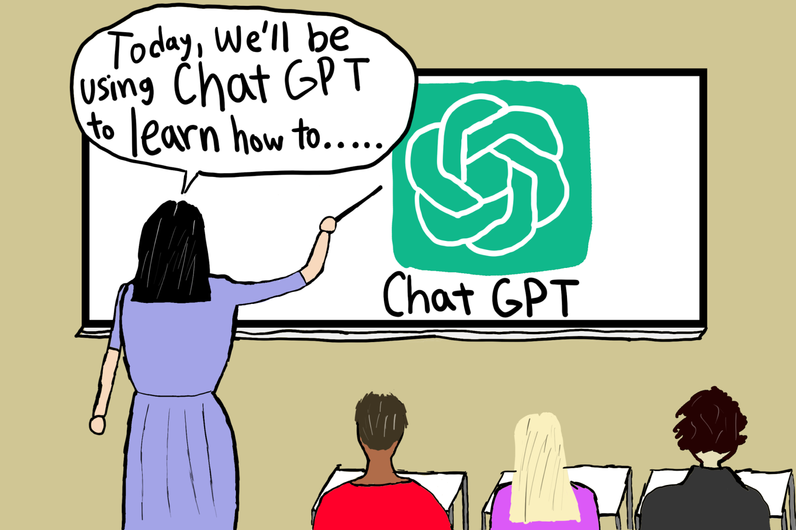

ChatGPT, an advanced language model developed by OpenAI, represents a significant leap in artificial intelligence (AI) technology. Built upon the Generative Pre-trained Transformer (GPT) architecture, specifically the GPT-4 version, ChatGPT has the capability to understand and generate human-like text. This AI model has been trained on diverse datasets, encompassing vast amounts of text from the internet, which enables it to provide contextually relevant and coherent responses. ChatGPT is employed in a variety of applications, including customer service, content creation, and as a virtual assistant in educational and professional settings.

Features of ChatGPT
Natural Language Understanding: One of ChatGPT's core strengths is its ability to understand and generate natural language. This makes interactions with the AI feel more human-like and intuitive.
Contextual Awareness: ChatGPT can maintain context over a conversation, allowing for more meaningful and relevant exchanges. This feature is crucial for applications requiring detailed and sequential interactions.
Versatility: The AI can handle a broad range of topics and tasks, from answering questions and providing explanations to generating creative content such as stories, essays, and poems.
Scalability: ChatGPT can be scaled to handle multiple queries simultaneously, making it an ideal solution for customer support and other high-demand environments.
Customization: Developers can fine-tune ChatGPT for specific tasks or industries, enhancing its effectiveness and relevance in various domains.
Limitations
Lack of True Understanding: Despite its advanced capabilities, ChatGPT does not possess true understanding or consciousness. It generates responses based on patterns in data rather than genuine comprehension.
Dependence on Training Data: The quality and accuracy of ChatGPT's responses are heavily influenced by the data it was trained on. Biases present in the training data can sometimes be reflected in its outputs.
Contextual Limitations: Although ChatGPT can maintain context within a conversation, it might struggle with longer or more complex exchanges, occasionally providing irrelevant or repetitive responses.
Ethical Concerns: The use of AI like ChatGPT raises ethical questions, particularly concerning misinformation, data privacy, and the potential for misuse in generating deceptive or harmful content.
How ChatGPT Works
ChatGPT operates based on the principles of the transformer model, a type of neural network architecture introduced in 2017. Here's a simplified explanation of how it works:
Pre-training: ChatGPT undergoes a pre-training phase where it learns from a large corpus of text data. During this phase, the model is trained to predict the next word in a sentence, given the previous words. This process helps the model understand language patterns, grammar, and context.
Fine-tuning: After pre-training, ChatGPT is fine-tuned on a more specific dataset with human reviewers following strict guidelines. This step refines the model's ability to generate appropriate and contextually accurate responses.
Tokenization: When a user inputs text, ChatGPT breaks it down into smaller units called tokens. Each token represents a piece of the text (words, punctuation, etc.), which the model processes to understand the input.
Context Processing: ChatGPT processes the input tokens within the context of the conversation, considering previous exchanges to generate a relevant response.
Response Generation: Based on the processed input, ChatGPT generates a sequence of tokens that form the response. This response is then converted back into human-readable text and delivered to the user.

Impact on Learning and Education
ChatGPT's integration into educational environments has shown both promising benefits and challenges. Here’s a closer look at its impact:

Enhanced Learning Support: ChatGPT can serve as a personalized tutor, providing students with explanations, answering questions, and offering additional resources. This can be particularly beneficial for students who require extra help or prefer learning at their own pace.
Accessibility: The AI can make learning more accessible to a broader audience, including those with disabilities. For instance, ChatGPT can provide instant translation services or convert text into simpler language, helping non-native speakers and those with learning difficulties.
Resource Availability: Teachers and students can use ChatGPT to generate educational materials, such as practice problems, study guides, and lesson plans. This can save time and enhance the quality of educational content.
Encouraging Independent Learning: By offering a 24/7 support system, ChatGPT encourages students to engage in independent learning and explore topics beyond the classroom curriculum.
However, the introduction of ChatGPT in education also presents several challenges:
Quality Control: The accuracy of information provided by ChatGPT can vary. There is a risk of disseminating incorrect or biased information, which requires careful oversight and verification by educators.
Over-reliance: Students might become overly reliant on AI for answers, potentially undermining their critical thinking and problem-solving skills. It’s important to encourage a balanced approach, using ChatGPT as a supplement rather than a replacement for traditional learning methods.
Ethical Considerations: The use of AI in education raises ethical questions about data privacy and the potential for monitoring student interactions. Institutions must establish clear policies and safeguards to protect students' privacy and data.
Teacher-Student Dynamics: The role of teachers might shift as AI becomes more integrated into the classroom. Teachers will need to adapt to this change, focusing more on guiding and mentoring students rather than solely imparting knowledge.
Conclusion
ChatGPT represents a significant advancement in AI technology, offering a range of features that make it a powerful tool for various applications. While it has limitations and ethical considerations that need to be addressed, its potential impact on education is profound. By providing personalized support, enhancing accessibility, and encouraging independent learning, ChatGPT can complement traditional educational methods and contribute to a more dynamic and inclusive learning environment. As with any technology, the key lies in leveraging its strengths while mitigating its drawbacks, ensuring that it serves as a beneficial tool for both educators and students.